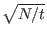

Grover briefly mentions that his algorithm can work in a setting where there is more than one state such that C(Si) = 1. In fact this poses no difficulty whatsoever, and regardless of the number of marked states we retain our superior performance over classical algorithms.. If there are t marked states, we can find one of the marked states in O() time. This presumes that we know the number of marked elements in advance. [BBHT96]
Another interesting special case comes when t = N/4, in this case just as in the special case where N = 4, we will find a solution with unit probability after only one iteration, which is twice as fast as the expected running time for a classical algorithm, and exponentially faster than the worst case classical running time. [BBHT96]